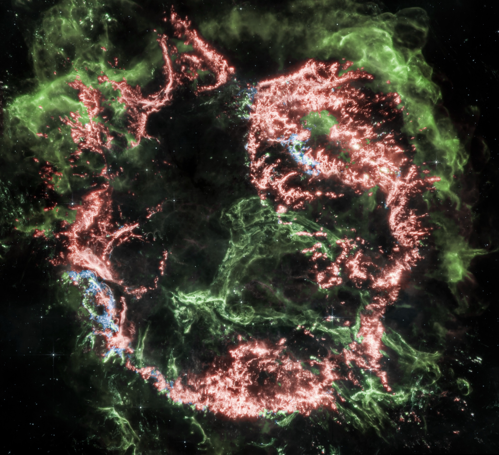

Acervo de edições
Webb encontra na poeira de Cassiopeia A sinais de que a estrela se reorganizou por dentro pouco antes de explodir
A composição de aglomerados de poeira da supernova indica que camadas internas da estrela se fundiram, possivelmente horas antes da explosão, segundo estudo publicado na revista The Astrophysical Journal Letters.

O Telescópio Espacial James Webb encontrou, na poeira do remanescente de supernova Cassiopeia A, indícios de que o interior da estrela que explodiu mudou de forma drástica, possivelmente poucas horas antes da explosão. O resultado foi publicado em 23 de novembro de 2026 na revista The Astrophysical Journal Letters, num estudo liderado pela astrônoma Tea Temim, da Universidade Columbia, e divulgado pela NASA e pela ESA.
Um remanescente de supernova é a nuvem de gás e poeira que sobra depois que uma estrela de grande massa explode. Cassiopeia A, ou Cas A, fica a cerca de 11 mil anos-luz da Terra, na constelação de Cassiopeia, e tem cerca de 10 anos-luz de diâmetro. A luz da explosão chegou à Terra há cerca de 340 anos, segundo a NASA.
Ao longo da vida, uma estrela grande funde elementos cada vez mais pesados no núcleo, até chegar ao ferro, enquanto elementos mais leves queimam em camadas ao redor do núcleo, como numa cebola. Na explosão, esse material é espalhado, e parte dele se condensa em grãos de poeira. Por isso, a composição da poeira guarda pistas de como a estrela estava organizada por dentro.
A equipe usou o espectrômetro de média resolução do MIRI, o instrumento de infravermelho médio do Webb, para medir a poeira de aglomerados individuais de material, do tamanho do Sistema Solar. Os alvos foram três regiões escolhidas antes com o telescópio Spitzer, da NASA, que já foi aposentado e não enxergava esses detalhes. Duas ficam na região atingida pelo choque reverso, uma onda de choque que volta para dentro e colide com os destroços lançados para fora: numa delas predomina poeira de sílica (dióxido de silício); na outra, poeira de carbono. A terceira é o "Monstro Verde", estrutura descoberta pelo próprio Webb, rica em silicatos de magnésio e formada por material que a estrela perdeu antes de explodir.
Os autores compararam essas composições com modelos da explosão. O resultado favorece uma fusão de camadas: as cascas onde a estrela queimava oxigênio e carbono teriam se misturado antes da explosão, o que mudaria bastante a estrutura da estrela e a proporção dos elementos químicos nos destroços. "O material dentro dessas cascas se agita e circula", explicou Temim, segundo a NASA. O estudo se apoia em observações em raios X dos telescópios Chandra, da NASA, e XRISM, liderado pela agência japonesa JAXA, e reforça que essa fusão estava em curso pouco antes da explosão.
Segundo a NASA, sinais da fusão aparecem em grande parte do remanescente, e o estudo propõe um novo método para deduzir a estrutura interna de uma estrela a partir da poeira deixada pela supernova. Para o coautor Dan Milisavljevic, da Universidade Purdue, a técnica permite ligar a explosão à composição da estrela original centenas de anos depois.
Grau de certezaO estudo passou por revisão por pares. A fusão de camadas é uma inferência: os autores mostram que as composições medidas são mais compatíveis com modelos que incluem essa fusão e tratam o resultado como mais uma evidência a favor desse cenário em Cas A, não como observação direta; o momento 'horas antes' é descrito pela NASA como possível.
Fontes
- NASA — NASA's Webb Shows How Supernova Dust Chronicles Star Evolution (23/11/2026)
- Temim et al., The Astrophysical Journal Letters 1012, L26 (23/11/2026)
- ESA/Webb — Webb shows how supernova dust chronicles star evolution, weic2624 (23/11/2026)
- NASA — Webb Reveals Never-Before-Seen Details in Cassiopeia A (07/04/2023)